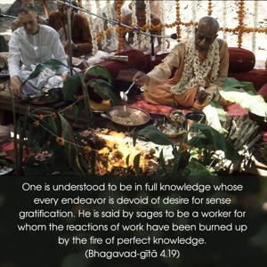
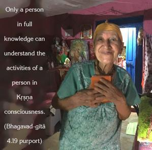
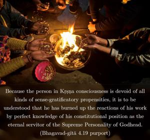
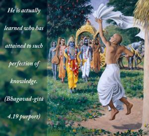
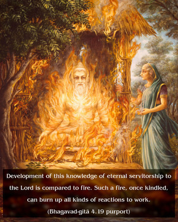

One is understood to be in full knowledge whose every endeavor is devoid of desire for sense gratification. He is said by sages to be a worker for whom the reactions of work have been burned up by the fire of perfect knowledge.





Only a person in full knowledge can understand the activities of a person in Kṛṣṇa consciousness. Because the person in Kṛṣṇa consciousness is devoid of all kinds of sense-gratificatory propensities, it is to be understood that he has burned up the reactions of his work by perfect knowledge of his constitutional position as the eternal servitor of the Supreme Personality of Godhead. He is actually learned who has attained to such perfection of knowledge. Development of this knowledge of eternal servitorship to the Lord is compared to fire. Such a fire, once kindled, can burn up all kinds of reactions to work.